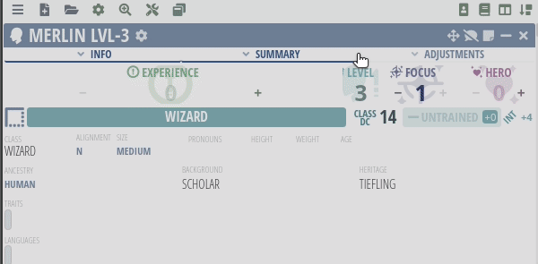

If you are using character.pf2.tools some of the steps can be automated (Hit Point increase, proficiency bonuses calculation, etc. see below).
Increase your level by 1.
Increase your maximum Hit Points by the amount listed in your class entry (done automatically in character.pf2.tools).
Add class features from your class advancement table.
Select feats as indicated on your class advancement table. For ancestry feats, see Ancestries. For class feats, see your class entry. For general feats and skill feats, see Feats (skill feats type of general feats, so you can select skill feat in place of general feat).
Add spells and spell slots if your class grants spellcasting. See Spells for spells. If your class has signature spells feature select them. (Note that your cantrips and focus spells heightened to maximum level available to you)
Add other features (like skill increase or expertises).
Adjust bonuses from feats and other abilities that are based on your level or you proficiencies.
Leveling-Up using character.pf2.tools
Increase your level by 1.
Hit Points increase done automatically.
Add class features from your class advancement table.
Proficiencies can be changed for everething if corresponding menu. (Note that spellcasting and skill have different proficiency. Occultism and occult spellcasting for example.) For Merlin it would be general feat and skill increase (Thorough Search and Arcana).
Select feats as indicated on your class advancement table. For ancestry feats, see Ancestries. For class feats, see your class entry. For general feats and skill feats, see Feats (skill feats type of general feats, so you can select skill feat in place of general feat).
Feats can be added automatically using
Add spells and spell slots if your class grants spellcasting. See Spells for spells. If your class has signature spells feature select them. (Note that your cantrips and focus spells heightened to maximum level available to you)
Spells can be added here using
Focus spells:
Add other features: it would be skill increase for Merlin.
Add new bonus from Automatic Bonus Progression table.
Change ADJUSTMENT: AUTOMATIC BONUS PROGRESSION. Replace SKILLNAME with skill if required (PERFORMANCE for example)

Adjust bonuses from feats and other abilities that are based on your level or you proficiencies. (New formulas, extra damage, new familiar abilities...)


{kind=link}